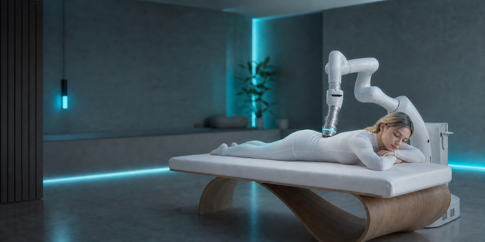

Advanced body point recognition
Body points can be combined with technique replication to support more consistent robot-assisted service delivery.

Cedeno Technologies is the exclusive German distributor for R2 robotic massage solutions, with local consulting, deployment support, training, and after-sales service for wellness centers, hotels, salons, recovery studios, senior living operators, and channel partners.
Core technology
Body points can be combined with technique replication to support more consistent robot-assisted service delivery.

Redundant force monitoring and controlled feedback help the R2 adjust movement within defined safety boundaries during treatment.

A guided interface helps staff manage settings, body areas, and service flow without turning the product into a black box.

Motion planning, collision detection, visual safeguards, soft limits, body boundary protection, and trajectory monitoring support safer use.
Solutions
Cedeno helps operators choose the right R2 room concept, service menu, safety explanation, and local support path before launch.
For spa owners and wellness operators who need consistent back, shoulder, leg, and full-body relaxation sessions without depending on one senior therapist.
For gyms, sports wellness centers, trainers, and active adults who want recovery support after workouts, travel, or long workdays.
For hotels, resorts, and clubs that want a distinctive in-room or spa-area body-care experience customers can book as a paid upgrade.
For salons, spas, hotels, and private wellness rooms that want a calm, comfortable, repeatable relaxation massage experience with clear staff guidance.
For office workers with shoulder and back fatigue, middle-aged and older family members seeking daily relaxation, fitness users needing recovery, and technology-minded households with enough installation space.
For channel partners selling to spas, salons, hotels, recovery centers, and senior care operators who need a differentiated robotic wellness product.
Deployment environments
R2 can be positioned in wellness centers, traditional wellness centers, beauty salons, community service centers, relaxation massage rooms, hotels, fitness centers, and sports wellness centers. Each setting needs a different room layout, customer promise, staff workflow, and safety explanation.


Trust signals
Cedeno uses product proof, technical documentation, and local service planning to help German buyers evaluate R2 before discussing room setup, staff training, maintenance, and quote terms.
Local service in Germany
Cedeno is the German contact for R2 purchase planning, installation coordination, team training, maintenance, and ongoing operator support.
Cedeno coordinates local R2 purchase planning and commercial deployment conversations in Germany.
Local service coordination for training, troubleshooting, maintenance, and operator support.
Room planning, workflow setup, safety explanation, and launch preparation for commercial operators.
Support for wellness centers, hotels, salons, recovery studios, and distribution partners.
FAQ
Cedeno R2 helps operators add a repeatable robotic massage offering. 24/7 operation is possible, and the system is positioned for a 400% increase in the patient-to-operator/masseur ratio.
Cedeno R2 is designed to support commercial wellness workflows, not replace professional judgment. Its 3 flexible massage attachments and repeatable setup help operators offer guided massage services alongside staff.
Cedeno R2 provides double safety through redundant force monitoring. Cedeno supports planning, training, and safety guidance for each operating site.
Cedeno R2 supports commercial wellness centers, recovery studios, hotels and resorts, relaxation massage rooms, and channel partners. Cedeno helps each operator plan the R2 room and service workflow.
Cedeno supports R2 partners in Germany and DACH with planning, training, maintenance coordination, and after-sales support. Contact Cedeno to discuss a local R2 deployment.
Conversion
Tell us your market, service room, target users, timeline, and quantity. We will route your request by home use, B2B deployment, distributor opportunity, or partnership fit.